Distributed air handling unit
This section describes how to distribute a single HVAC system, such as an air handling unit, across multiple automation stations.
Although it is typically implemented on a single automation station, certain scenarios require splitting system control across two or more controllers. This distribution may be necessary for one or more of the following reasons:
- Physical constraints, such as supply and exhaust components, being located in different areas of a building
- Design requirements
The following documentation outlines the methodology and best practices for implementing such distributed control strategies that maintain system integrity and optimal performance.
This example focuses on the nested Ahu21x plant. The images below show the system in its original state (in one automation station) and split into the main and extract parts (in two automation stations). In this example, the main part is called main instead of supply because it houses the plant operating mode and the CMDSEQ_B function block.
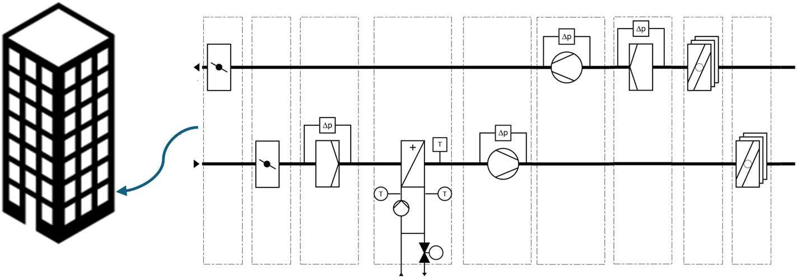
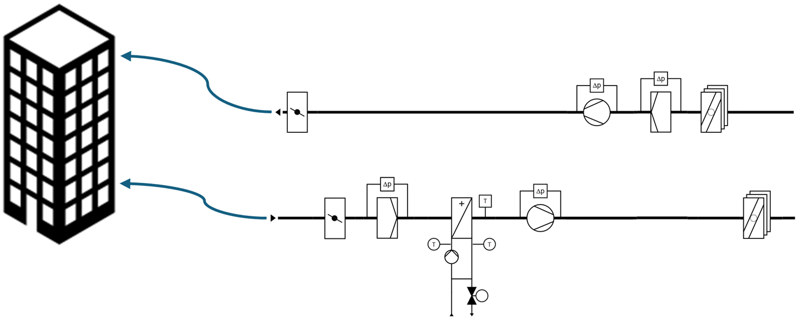
Communication
The classic approach to sharing information between controllers is BACnet referencing. This means that a pair of BACnet reference and value objects is needed for every piece of information exchanged.
This can be optimized by using the MUX_101 and DMUX_101 function blocks. Multiplexing compiles multiple parameters into a serialized data stream. This stream only requires one pair of BACnet reference and value objects.
This method allows us to set up all the necessary communication for the air handling unit with two BACnet reference objects and two value objects. Additionally, we need two MUX_101 and two DMUX_101 function blocks.
- To send data: Use the MUX_101 function block to serialize multiple parallel values into a single transmission stream.
- To receive data: Use the DMUX_101 function block to deserialize the received data back into parallel values.
Each MUX_101 and DMUX_101 function block pair can handle up to:
- 15 analog parameters
- 15 binary parameters
- 15 multistate parameters
Total capacity: 45 parameters
Configure the MUX_101 and the corresponding DMUX_101 function blocks with the same number of parameters for each type (analog, binary, and multistate).
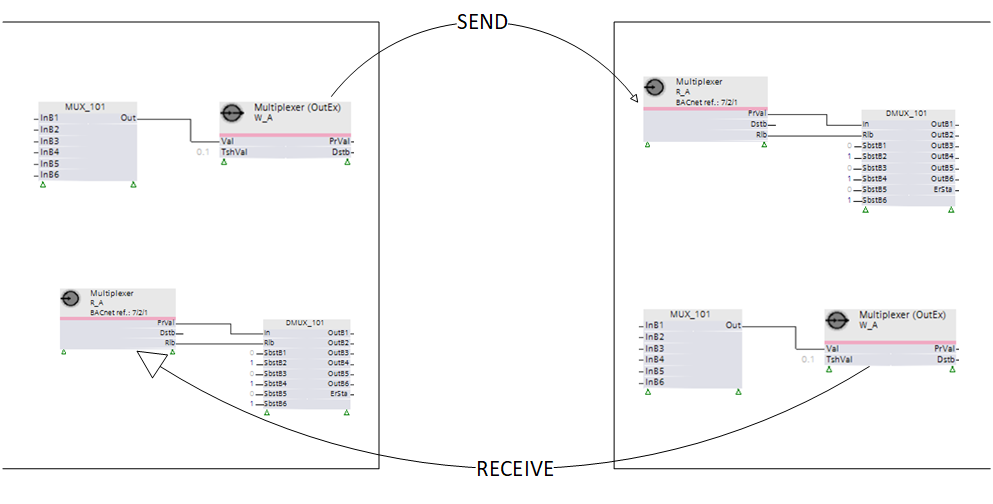
This results in the system setup shown in the image below. As described above, the MUX_101 and DMUX_101 function blocks exchange information between the applications. One exception is the extract temperature (TEx). This temperature is transferred using BACnet referencing.
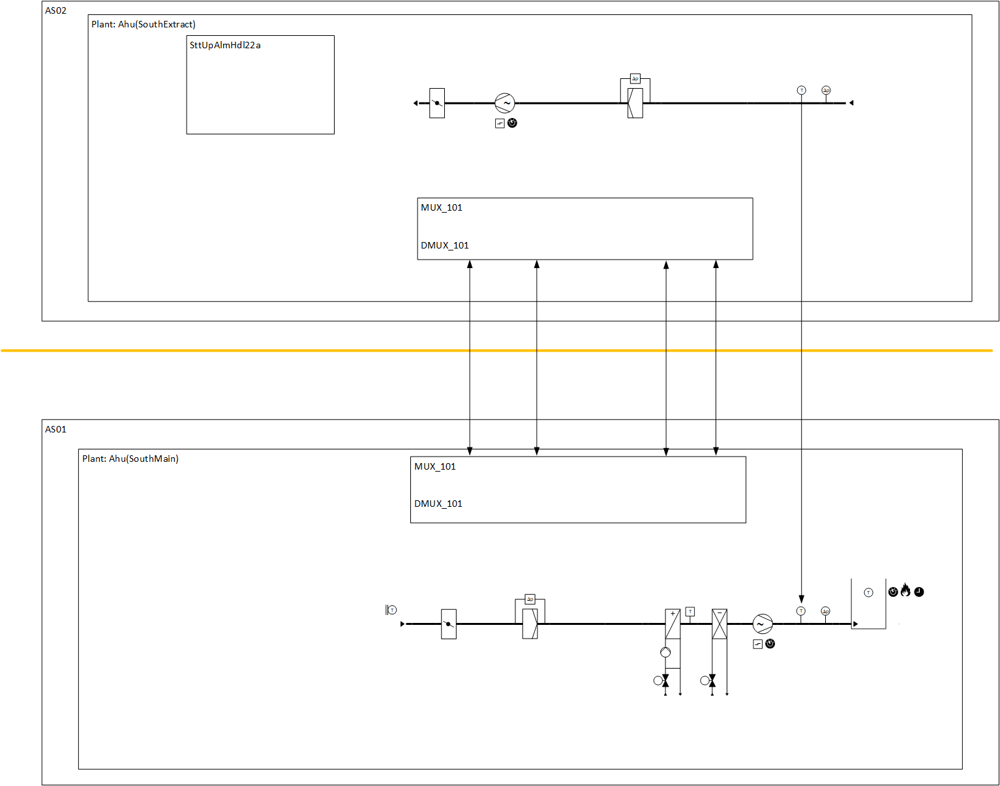
Project overview and initial setup
Each plant has its own unique name. Plant Ahu(SouthMain) is on controller AS01, while Ahu(SouthExtract) is on controller AS02. A superior element of type "Section" named Ahu_South groups the two plants.
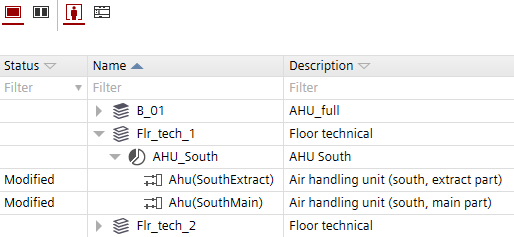
1. Create the main (supply) part.
Add Ahu21x, name it "Ahu(SouthMain)", and remove all the optional elements that are not needed or belong to the extract part from the control program.
2. Create the extract part.
Add Ahu21x, name it "Ahu(SouthExtract)" and remove all elements that are not needed, including mandatory elements, such as plant operating mode, CMDSEQ_B.
Removing the plant operating mode also removes the startup function and alarm handling program block. We recommend including this program block in every plant. For this reason, we recommend adding it manually. Select one of the following program blocks. We recommend SttUpAlmHdl22a:
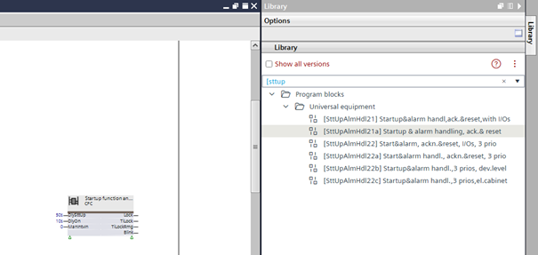
3. Add and configure the multiplexer function block.
A crucial aspect of distributed control is the use of multiplexer (MUX) and demultiplexer (DMUX) function blocks, which serialize and deserialize data for transmission between automation stations.
Add the MUX_101 and DMUX_101 function blocks from the library to the control program.
Configure the properties of the MUX_101 function block.
Define the number and type of inputs in the Interface tab. In the main part described in this example, the MUX_101 function block requires only five binary inputs. Set NumInR and NumInMs to 0 and NumInB to 5. Then, activate the checkboxes next to the first five binary inputs.
Refer to the image under point 4 for the settings of the DMUX_101 function block.
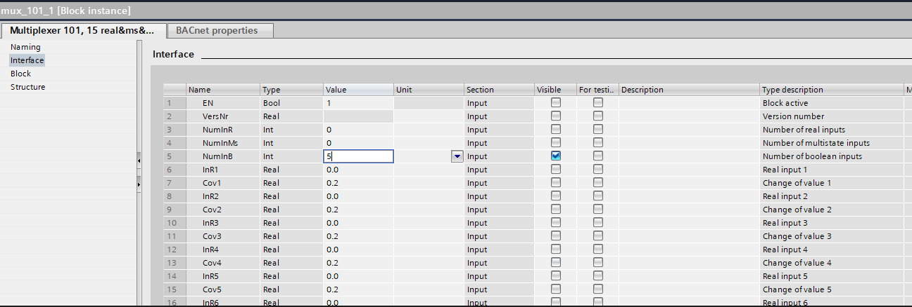
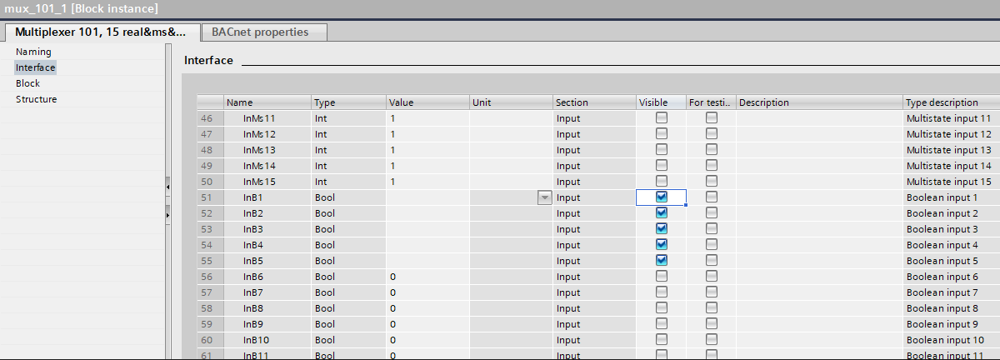
4. Add a calculated value and a BACnet reference object.
Add a BACnet reference object and a calculated value to the control program. Select W_A from the library.
Set the BACnet reference object to Analog calculated value reference. In this example, the BACnet reference object is Multiplexer, and the calculated value is Multiplexer(OutSu). In the extract part, the BACnet reference object is Multiplexer, and the calculated value is Multiplexer(OutEx).
The following images show colored links. The yellow lines represent information that originates from the extract part and is sent to the main part. The orange lines are the counterpart of the yellow lines and are sent from the main part to the extract part.
The Demultiplexer has substitute values, SbstXY, that are passed through to the output, if no data is received from the BACnet reference object. This could be due to a communication problem or power loss on one of the automation stations. In this case, the values must be set so that both plants stop.
4.1. Link the function blocks in the main part as follows:
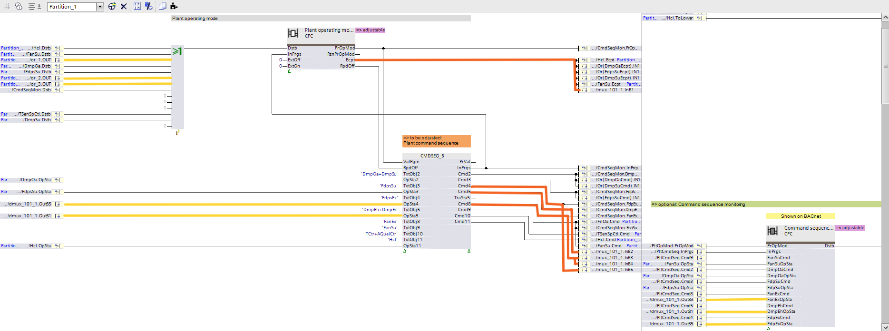
The image above shows the connections to the CMDSEQ_B and Command sequence monitoring blocks.
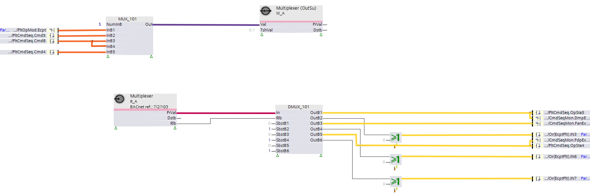
4.2. Link the blocks in the extract part as follows:
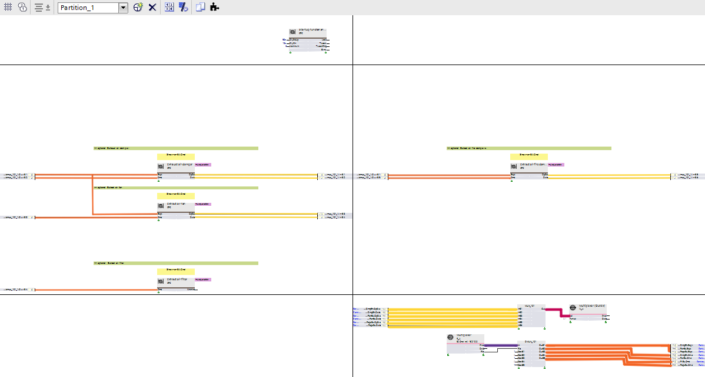
5. Set the BACnet reference object settings.
In the BACnet properties tab, set the Configured update mode to COV. Data exchange does not work with Polling.
Then, link the BACnet reference object from the main part to the calculated value object of the extract part, and vice versa.
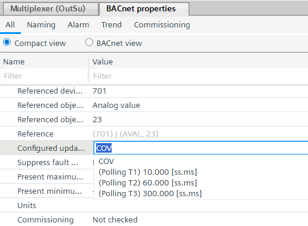